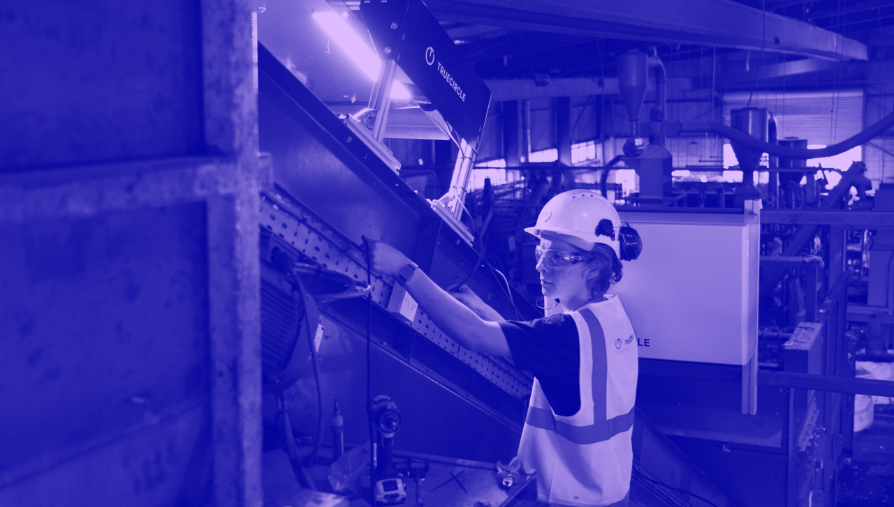

Hey! I’m Ben. I am a technologist, engineer, & designer. I am
currently working on game-changing tech for the recycling industry @TrueCircle AI. Before that, I studied at Imperial College London, where, I
developed cooking robots and a
medical diagnosis device [amongst other things!]. During the
Design Engineering degree, I interned at Google X, Dyson, and
Brompton. I got to work on some
great projects with great people. In my free time, I love being
outdoors and building things with friends. Interested in
building new things / making a positive impact on earth?
Say hello!.
TrueCircle AI
2021+
Design Engineer @ Early-Stage Startup
- Launched MVP product in UK facility
- Developed 10x more reliable hardware
- Implemented roadmap to outsource site work
1 Year+ full-time
TrueCircle HQ, London
PH et al.
TrueCircle AI
-

-

TrueCircle AI is a
climate-tech startup developing ground-breaking computer vision
hardware that enables recycling facilities to recover valuable
material more effectively and sell material more efficiently. We
retrofit industrial cameras above conveyor belts to capture
continuous footage of material streams. Our state-of-the-art model
calculates composition by weight in real-time, to a 95%+ accuracy.
We’ve built industry-leading dashboards that empower facilites to
run more efficiently, preventing recyclable material from going to
landfill.
TrueCircle partnered with UK facilites to investigate data-driven
optimisation of recycling processes. A typical TrueCircle AI user is
a Plant Manager who is preocupied with keeping unreliable equipment
running, and doesn't have time to experiment with upgrades to
improve profitability. Our users lacked any data to inform decisions
on upgrading equipment, or calibrate the price of their recycled
material. The existing players in the market couldn't offer a
solution accurate enough to justify their time-consuming and costly
setup process.
I joined as TrueCircle's first full-time hardware engineer. Over the
past year+, launched a product that can be retrofit in a few hours,
with zero up-front hardware cost for our customers. We send instant
alerts flagging operational issues, and we can verify material
purity with 95+% accuracy in 30+ facilities internationally. Buyers
now trust material quality, leading to a direct increase in revenue
per tonne. TrueCircle has also launched Trade, an online marketplace
that allows Plant Managers to buy and sell material verified by
purity data from our AI vision system, for the first time.
My responsibilities: Launched TrueCircle’s MVP hardware and led
installation of our initial pilot system at a UK recycling facility.
Outlined a roadmap for reducing failure rate. Implemented a strategy
and led development of new hardware version, resulting in a 10x
reduction in 12-month failure rate, saving £1000s in maintenance
costs. Demonstrated technical leadership; designed and implemented
processes to hand over system installations to a 3rd-party supplier,
proving product scalability; a key requirement for TrueCircle’s
upcoming Series A.